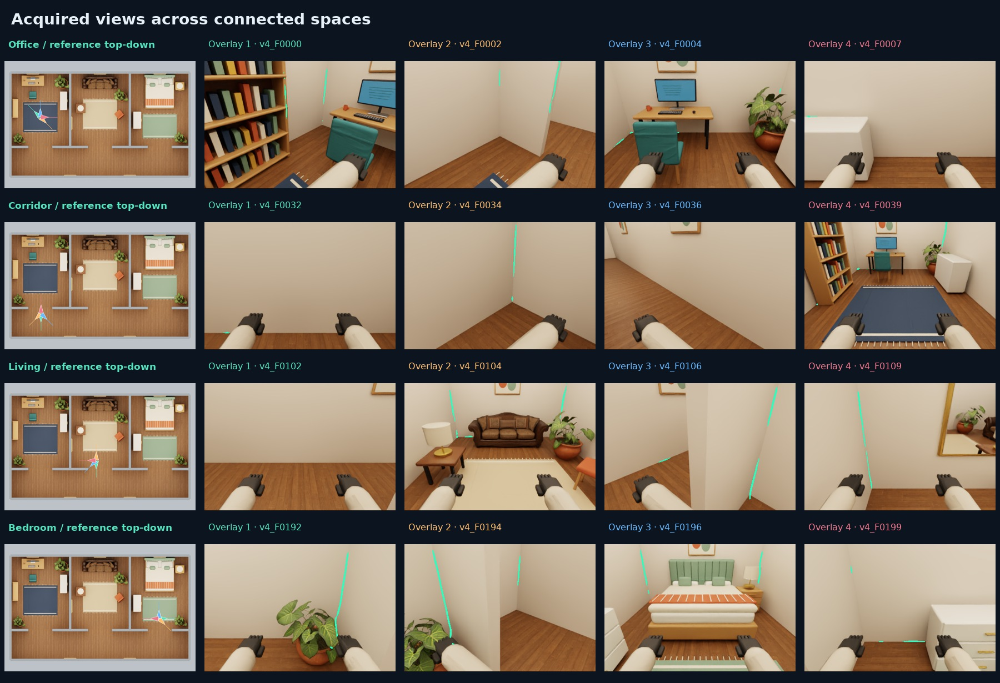

Inspect the current space
A head-mounted camera acquires local views with changes in yaw and pitch. Robot arms can enter the image. The frozen perception model predicts visible and typed architectural boundaries from RGB.
ROOMGRAPH / EXPLORING CONNECTED INDOORS
Start in an office. Look around, build a partial map, and move toward reachable boundaries of unknown space. Open doorways connect the room to a corridor and further furnished rooms. Each new observation joins a shared 3D map.
This experiment combines the existing RGB edge model with simulated depth and known camera poses. Depth supplies metric surfaces and free-space evidence; learned edges add structural observations. No reference floor plan, room list, or route is supplied to the exploration policy.
One development building with three rooms and one corridor. These measurements describe a single run; they do not establish held-out building generalization or complete reconstruction.
01 / ACQUIRE, UPDATE, MOVE
A head-mounted camera acquires local views with changes in yaw and pitch. Robot arms can enter the image. The frozen perception model predicts visible and typed architectural boundaries from RGB.
Acquired depth and calibration accumulate observed 3D surfaces and a free/occupied/unknown map. Predicted structural points require both visible-edge and matching typed-edge support. Unseen surfaces remain missing.
The planner scores boundaries between observed free space and unknown space. It moves along paths permitted by the current map with an inflated footprint, then looks again. Doorways emerge through observations rather than a supplied waypoint graph.
ACQUIRED VIEW GALLERY
Each row contains a furnished top-down reference followed by four acquired camera views with predicted structural edges. Camera triangles show position and viewing direction. Reference region names organize this gallery only; they were hidden from the policy.

02 / OBSERVED 3D GEOMETRY
Drag or use arrow keys to orbit; scroll or press +/− to zoom. The point cloud contains only acquired observations. You can separate RGB-D surfaces, learned edges, and the recorded body path.
Loading observed point data…
Download selected observed point data (JSON) ↗
__WALL_PATCH_DOWNLOAD__Open doorways can remain as gaps in observed geometry, allowing maps on both sides to connect. This output is a partial point cloud, not a finished architectural mesh or a fitted model of door leaves, hinges or opening angles. Missing points can also mean occlusion or insufficient observations.
03 / SINGLE-BUILDING DEVELOPMENT RUN
__RUN_DESCRIPTION__
First region entries, evaluated against the withheld reference: __ENTRY_ORDER__. Room names are evaluator labels; the policy does not receive them.
| Reference region | Visible structural edges | 3D completeness @ 10 cm | Completeness of visible edges |
|---|
Visibility is the length-weighted fraction of true architectural edges seen in acquired frames. Completeness measures reference edge length within 10 cm of a fused prediction; precision measures fused predicted points within 10 cm of a reference edge. They are separate quantities: seeing an edge does not mean reconstructing it correctly. __TYPED_SCORES__
__TIMING_DESCRIPTION__
Motion budgets count simulated base/head motion and settling. Compute measurements include the stated processing stages; this is a local simulation experiment, without real robot control latency.
__AUDIT_DESCRIPTION__
The evaluator checks continuous horizontal disk clearance along recorded path segments against architecture and approximate furniture boxes. This does not validate whole-body collision avoidance, contact, gait, or real-world safety.
Compact measurements and provenance (JSON) ↗ · Protocol and commands ↗
04 / WHAT THIS EXPERIMENT ESTABLISHES
The edge checkpoint is reused without retraining. Isaac Sim stays warm and renders requested views on demand, so the controller only acquires the view it selected. Existing observations and predictions remain available for replay and evaluation.
The original single-room test benchmark remains a separate result. This connected building is a development experiment with different geometry and a depth-assisted mapping pipeline.
Known metric poses remove SLAM drift, and ideal simulated depth avoids the missing returns and noise of physical sensors. The original humanoid proxy is not an official 1X model. Mirror reflections, arms, clutter and incomplete coverage remain relevant distractors.
A complete system still needs robust pose estimation, uncertainty-aware surface fusion, reliable room and doorway topology, whole-body motion, and evaluation across held-out buildings. Reaching all rooms is different from reconstructing all their surfaces.